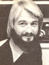
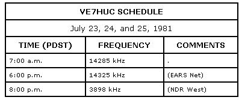

Any of you NDR folks who haven't yet read Marilyn Ferguson's book, The Aquarian Conspiracy, might want to do so between now and July 23rd. The profound, lucid, and very positive volume will be the central focus of the 8th International Human Unity Conference being held, at the University of British Columbia, from the 23rd through the 26th. Ferguson's work is by far the clearest statement I've seen dealing with the postsixties movement toward saner lives, deeper understanding, and a better world. Marilyn will be in Vancouver to contribute to the discussion, and ham radio will be there too . . . giving people who live far away a chance to participate in the conference.
In fact, the logistics of the Human Unity radio hookup has been taking shape for some months now. The Canadian Government has even provided a special call sign, VE7HUC, for the conference station. Herb Clark (VE7COC), my octogenarian activist friend, had a hand in turning the notion of a hookup into a reality, and has been our ham-on-the-scene in Vancouver during all the early preparations. Howard Silsdorf (WB7AQP) and Rob Southcott (VE7BRS) have also been busy, working out such details as the operating schedule for VE7HUC. Other assistants include Rick Glaese (N7ANL) and Robert Stonne (K6PZ1).
I'm pleased to be able to report that the in-person and on-air conferences will interface in several ways. First, any attendees who are interested in the radio sessions will be encouraged to get actively involved in them. In addition, our on-air conversations will be taped, and the best of those discussions will be shared with the folks at the conference. And finally, taped highlights of conference sessions will be used to add stimulation and focus to the NDR discussions.
So if you can't be there in body, stretch your ears and voice with ham radio and join us on the air beginning Thursday, July 23rd. Your local bookstore probably has copies of The Aquarian Conspiracy. If not, the book can be ordered from Houghton Mifflin, Dept. TMEN, 2 Park Street, Boston, Massachusetts 02107 . . . for $16, postpaid. (Last issue's NDR column included additional information about the conference.)
I recently received a letter that I'd like to quote in this column. It ought to help erase any lingering doubts folks might have about the compatibility of ham radio and a back-to-the-land lifestyle . . . and it also introduces a subject that I've been wanting to bring up: the 2-meter FM mode of ham communication.
The letter was sent by Jerry Rosman, KA7FTN (Monte Cristo, Box 737, Granite Falls, Washington 98252). He wrote:
"I wonder if most MOTHER-type people fully realize how much an FCC amateur radio license can help a family cope with the problems inherent in remote living. Our radio not only makes our `bush' life safer and easier, but also gives us access to a worldwide arena for the exchange of ideas and information . . . as well as a fantastic source of solutions to problems.
"Up here in Washington's North Cascades-in a deserted 1890's gold-mining town-my wife and I and our three youngsters live 26 miles from the nearest phone or powerline, and 14 miles from our 'nextdoor neighbor'! We're isolated by deep snows, landslides, avalanches, and washouts for five to six months of the year, and we often have to snowmobile 12 miles -one way-just to find the start of the plowed road.
"As you can imagine, then, amateur radio is much more than our hobby . . . it's our lifeline!
"We produce 10 KW of AC power with a hydro system fed by a glacial stream. This provides `juice' for (among other things) an IC 255A 2-meter transceiver with an 11-element Cushcraft beam. We're able to hit 14 repeaters in northwest Washington and the Puget Sound area, which-in total-cover about 200 miles of coastline from below Tacoma to Canada. We're also involved in repeater groups with telephone autopatches, which give us immediate personal and emergency communications with points outside our remote valley.
"Two weeks ago, our three-year-old son spilled airplane dope thinner in his eyes. Within minutes the telephone autopatch had us talking with a doctor in a hospital emergency room, whose advice helped us save the boy's eyes from permanent damage. We're also a way station for hundreds of hikers, climbers, and tourists who roam the high peaks. In the last three years we've had 46 backpacker-related emergencies, and they were all handled quickly and neatly with the help of our amateur radio.
"Furthermore, if we have an electrical, electronic, garden, animal, or homestead problem, the mere mention of it on 2 meters will usually bring advice, counsel, and experience that often save us countless hours of trial-and-error experimentation!
"It takes time, effort, and study-plus some bucks-to become a ham operator . .. but, for most back-to-the-landers, the investment will pay for itself a millionfold. Ham radio can introduce folks in isolated locales to a whole world that many people don't even know exists!"
Many thanks, Jerry, for sharing your experiences and feelings with us! Repeaters, telephone autopatches, beams, and 2-meter transceivers can all be incorporated into a very neat mediumdistance communication scheme. The 2-meter band falls between 144 and 148 MHz in the VHF portion of the radio spectrum. Communication is pretty much "line of sight" on this band, and-for years-it was used mostly for short distance local communication.
A few years back, though, several enterprising hams realized that they could greatly extend the range of their 2-meter stations by putting relays atop high hills, buildings, and mountains. Today there are hundreds of these repeaters dotted all over North America. And tens of thousands of hams, like Jerry, are able to plug into the regional 2-meter party lines. I'll go into more detail on this fascinating topic in next issue's column.
Peace, Cop Macdonald (VE1 BFL)
P.O. Box 2941
Charlottetown
Prince Edward Island
Canada C 1 A 8C5
New Directions Radio is an international network of radio amateurs concerned with those ways of using ham radio (and related modes of communicating) that promote our own growth as individuals, and which we perceive as helping to create a more aware, more caring, and more responsible human society. We encourage all who share these interests to work with us. A current schedule of on-the-air activities is included in each issue of the bi-monthly New Directions Roundtable Newsletter, published by Art Mourad (WB2POB) as a service to the rest of us. To subscribe, send 25 cents for each issue desired to Art Mourad, Dept. TMEN, P.O. Box 787, Bergenfield, New Jersey 07621.
|
 |
 |
|